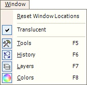

Available Windows

The
usefulness of Paint.NET has been greatly enhanced with free floating functional
windows. These windows contain the most common and useful paint
tools. They are quickly accessible by selecting Window from the menu bar.
The Tools Window quick access to the most commonly used paint tools such as a
brush, pencil, and a the paint bucket. The History Window allows the user
to Undo and Redo actions quickly and effortlessly. As a result, the user
is not limited to a single undo and redo. The History Window also
allows the user to visually select the redo and undo action. The Layers
Window allows the user to add and remove layers from the current image.
The Colors Window has a color wheel for quick color selection. The
Reset Window Locations menu item docks the windows back to their original
starting place.
The 'Translucent' item allows you to toggle the
translucency of the floating forms and dialogs. If enabled, any window
that overlaps with the canvas will become translucent. Regardless of this
setting, however, windows will always be opaque when the mouse hovers above
them.
In addition, each window has the ability to dock to any
side of Paint.NET. Simply move any undocked window close to a side, and the
window will snap in place.
For more information on a
specific window, use the links below: